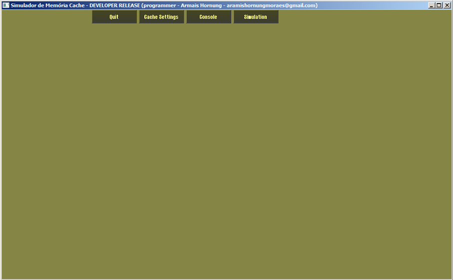
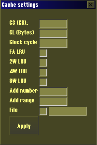
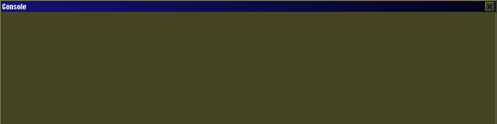
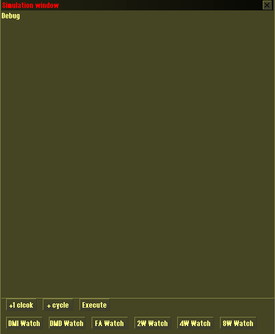
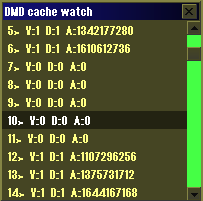

User Interface
The following images explain what every window of the simulator does:.
The main window is a "mini-desktop" with, basically, three buttons to call the other modules. They are Cache Settings, Console and Simulation.
Cache Settings
Allows the user to define the size of the cache, the cache line, the size of the window slice (in clocks). For the LRU substitution algorithm, some checkboxes to define which caches are going to use this algorithm during the simulation. Finally a address definitions, with option to allow a automatic address generation or to import a .txt with addresses pre-defined. After those all those parameters are defined you can finally start the simulation.
Console
The console allows the visualisation of every cycle of the simulation. It will show in detail all the events that happen of every cache hit and cache miss.
It is highly recommended to close the console during the execution of the simulation. Simulations with a high number of addresses will cause slow performance It is recommended to close the console for simulations with more than 1000 addresses.
Simulation
The simualation window will show the general information, it also allows you to control the simulation cycles. There are three buttons for navigation, one for the clock to clock, one to run a window cycle, and the other to run the simulation until it finishes.

Also, there are six buttons that shows the "view" windows. The view window is a specific cache status window, it allows you to see all the addresses that a cache contains.